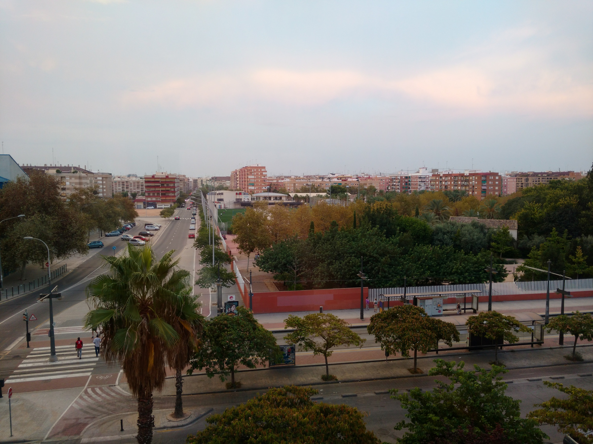
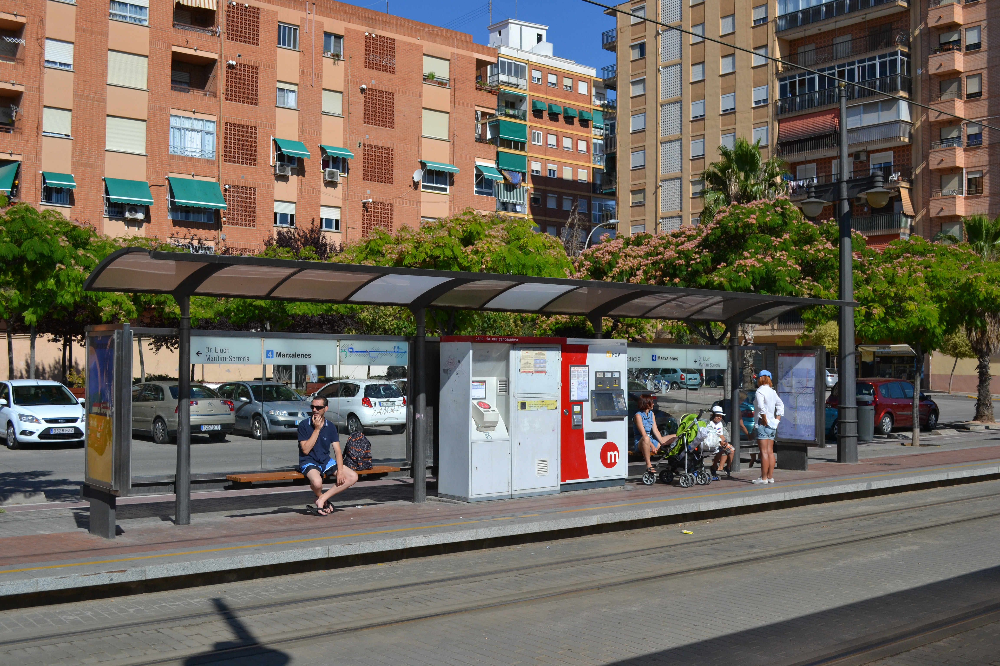

Saapuminen

Lentokentältä
Villa Hillaa lähin lentokenttä on Valencian lentoasema (VLC), tunnetaan myös nimellä Manises.
Se sijaitsee n. 11 km päässä. Autolla tai taksilla matka kestää n. 25 min, julkisilla n. 55
min.
- Seuraa metron opasteita linjalle nro 3 (suunta Rafelbunyol).
- Aja 15 pysäkkiä asemalle Benimaclet.
- Vaihda raitiovaunuun nro 4 (suunta Mas del Rosari).
- Jää pois pysäkillä Marxalenes (5 pysäkkiä). Villa Hilla on 100 metrin
päässä.
- Kertalippu: 4,80 € (ostettavissa automaatista).
Rautatieasemalta
Päärautatieasemalta (Estación del Norte) kulkee bussi nro 28.
- Ylitä Calle de Xativa -katu aseman edessä.
- Bussin 28 päätepysäkki (suunta Ciutat de l’Artista Faller) on vasemmalla.
- Jää pois pysäkillä Burjassot – Marxalenes (8 pysäkkiä).
- Seuraa puiston muuria Villa Hillalle (n. 300 m).
- Kertalippu: 2,80 €.

Bussiterminaalista
Bussiterminaalista on Villa Hillaan 15 min / 1,2 km kävelymatka tai 6 min taksimatka.
- Käänny pääovilta vasemmalle (Av. de Menendez Pidal).
- 300 m päästä vasemmalle (Calle del Pare Ferris).
- 180 m päästä oikealle (Calle Gregori Gea).
- Jatka suoraan risteyksen yli (Calle de Malaga).
- 320 m päästä vasemmalle (Calle del Periodista Llorente).
- 350 m päästä vasemmalle holvikaaren ali – Villa Hilla on oikealla.